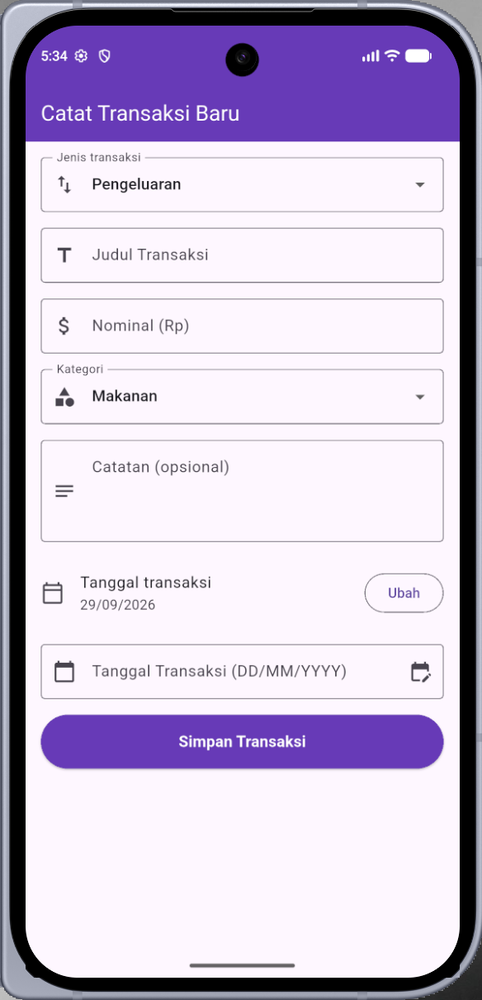

Laporan Praktikum Pemrograman Aplikasi Mobile Modul 3
Input Widgets & Forms: Menangkap Data, Dropdown, dan Validasi
Oleh:
AHMAD RAKA ALKINDI
NIM. 2411533017
Dosen Pengampu:
NURFIAH, S.ST, M.Kom.
Mata Kuliah:
PEMROGRAMAN APLIKASI MOBILE
Fakultas Teknologi Informasi
Universitas Andalas
Padang
A. Pendahuluan
Praktikum ini berfokus pada pembuatan formulir input pada Flutter untuk menangkap data dari pengguna, menyediakan pilihan melalui dropdown, serta memvalidasi isian agar data kosong atau berformat salah tidak masuk ke dalam sistem. Konsep dan komponen utama yang dipelajari (Pilar Formulir Flutter) meliputi:
a. Form & GlobalKey
Wadah utama untuk memvalidasi banyak input sekaligus. GlobalKey<FormState> digunakan untuk memicu validasi seluruh kolom.
b. TextFormField
Kolom teks yang mendukung validasi terintegrasi melalui properti validator.
c. TextEditingController
Pengendali untuk membaca (dan mengubah) teks yang diketik pengguna pada sebuah kolom input.
d. Validator
Fungsi yang memeriksa isi kolom. Mengembalikan null jika data valid, dan mengembalikan String (pesan error merah) jika data tidak valid.
B. Tujuan
Tujuan dari praktikum ini adalah agar mahasiswa mampu:
- Menangkap teks dari pengguna melalui
TextEditingController. - Menerapkan widget dropdown statis menggunakan
DropdownButtonFormField. - Melakukan validasi input untuk mencegah data kosong atau format yang salah.
Alat yang digunakan: Flutter SDK, Code Editor (VS Code / Android Studio), Emulator / Device.
C. Isi & Langkah Kerja
Pengerjaan praktikum dilakukan dengan membuat file baru add_transaction_screen.dart yang berisi formulir pencatatan transaksi, kemudian memanggilnya dari main.dart. Berikut adalah alur dan dokumentasi langkah kerjanya:
Widget Utama (main.dart & MyApp)
Titik masuk aplikasi berada pada void main() yang memanggil runApp(const MyApp()). Kelas MyApp merupakan StatelessWidget yang membungkus MaterialApp dengan tema
Colors.deepPurple, dan menetapkan AddTransactionScreen sebagai halaman awal. File add_transaction_screen.dart diimpor pada bagian atas.
.png) Gambar 1: Kode Program main.dart & MyApp
Gambar 1: Kode Program main.dart & MyApp
Kelas AddTransactionScreen (StatefulWidget)
AddTransactionScreen dibuat sebagai StatefulWidget karena isi formulir (teks dan dropdown) akan terus berubah saat pengguna mengetik. Method createState() mengembalikan
_AddTransactionScreenState yang menyimpan seluruh data internal formulir. Pada file ini juga diimpor services.dart untuk kebutuhan FilteringTextInputFormatter.
.png) Gambar 2: Kode Program Kelas AddTransactionScreen
Gambar 2: Kode Program Kelas AddTransactionScreen
Persiapan State & Controller
Pada _AddTransactionScreenState disiapkan _formKey (GlobalKey<FormState>) untuk memicu validasi, serta empat controller: _titleController, _amountController,
_notesController, dan _dateController (controller tambahan untuk latihan). State dropdown disimpan pada _selectedCategory, _selectedType, dan _selectedDate, dengan daftar kategori
_categories berisi Makanan, Transportasi, Hiburan, dan Lainnya.
.png) Gambar 3: Kode Program State & Controller
Gambar 3: Kode Program State & Controller
Method dispose() & _selectDate()
Method dispose() membersihkan seluruh controller saat halaman ditutup untuk mencegah memory leak. Method _selectDate() memanggil showDatePicker (rentang tahun 2020–2100); jika pengguna memilih tanggal,
setState() memperbarui _selectedDate dan mengisi _dateController.text dengan format DD/MM/YYYY memakai padLeft(2, '0').
.png) Gambar 4: Kode Program dispose() & _selectDate()
Gambar 4: Kode Program dispose() & _selectDate()
Method _saveTransaction()
Method ini terlebih dahulu menjalankan _formKey.currentState!.validate(); bila ada kolom tidak valid, proses dihentikan. Jika lolos, tanggal diformat lalu ditampilkan pada AlertDialog berjudul
"Transaksi tersimpan" yang memuat jenis, nominal, judul, kategori, dan tanggal. Tombol "Selesai" menutup dialog dan mengosongkan semua controller (termasuk _dateController) serta mengembalikan state ke nilai awal.
.png) Gambar 5: Kode Program _saveTransaction()
Gambar 5: Kode Program _saveTransaction()
Method build() Bagian 1: Form, Jenis, Judul & Nominal
build() mengembalikan Scaffold dengan AppBar ungu. Body dibungkus SingleChildScrollView agar layout tidak error saat keyboard muncul, lalu Form yang dihubungkan dengan _formKey.
Kolom pertama adalah DropdownButtonFormField "Jenis transaksi" (Pengeluaran / Pemasukan). Kolom judul memakai TextFormField dengan validator: tidak boleh kosong dan minimal 3 karakter.
Kolom nominal memakai TextInputType.number, FilteringTextInputFormatter.digitsOnly, dan validator yang memastikan nilai terisi serta berupa angka bulat lebih dari 0 melalui int.tryParse.
.png) Gambar 6: Kode Program build() Bagian 1
Gambar 6: Kode Program build() Bagian 1
Method build() Bagian 2: Kategori, Catatan, Tanggal & Tombol Simpan
Kolom selanjutnya adalah dropdown "Kategori" yang item-nya dibuat dari _categories.map(...) dan diperbarui dengan setState() pada onChanged. Lalu terdapat kolom "Catatan (opsional)" dengan maxLines: 3,
sebuah ListTile yang menampilkan tanggal transaksi beserta tombol "Ubah", dan kolom "Tanggal Transaksi (DD/MM/YYYY)" yang bersifat readOnly dengan onTap: _selectDate, ikon edit_calendar
sebagai tombol pemilih tanggal, serta validator wajib diisi. Terakhir, ElevatedButton "Simpan Transaksi" memanggil _saveTransaction.
.png) Gambar 7: Kode Program build() Bagian 2
Gambar 7: Kode Program build() Bagian 2
Latihan / Tugas: Input Tanggal
Menambahkan satu input baru sebelum tombol Simpan untuk mengisi Tanggal Transaksi, dengan ketentuan berikut:
1. TextFormField Tanggal
Menggunakan TextFormField dengan _dateController dan format teks DD/MM/YYYY.
2. Tombol showDatePicker
Ikon edit_calendar dan onTap memanggil _selectDate() yang menjalankan showDatePicker.
3. Validasi Wajib Diisi
Validator mengembalikan "Tanggal transaksi wajib diisi!" bila kolom kosong.
Implementasi latihan ini dapat dilihat pada Gambar 3, 4, dan 7.
Hasil Output Program
1. Output Program Dasar
Pada program dasar sesuai modul, formulir terdiri dari kolom Judul Transaksi, Nominal (Rp), dan dropdown Kategori. Setelah data diisi dan tombol "Simpan Transaksi" ditekan, validasi berhasil dan muncul SnackBar hijau
berisi judul dan nominal yang tersimpan.
 Gambar 8: Tampilan Awal Form (Program Dasar)
Gambar 8: Tampilan Awal Form (Program Dasar)
 Gambar 9: SnackBar Setelah Data Disimpan (Program Dasar)
Gambar 9: SnackBar Setelah Data Disimpan (Program Dasar)
2. Output Tugas (Input Tanggal)
Pada versi tugas, formulir dilengkapi dropdown Jenis transaksi, kolom Catatan (opsional), penampil tanggal dengan tombol "Ubah", serta kolom Tanggal Transaksi (DD/MM/YYYY) dengan ikon kalender. Menekan tombol tanggal
menampilkan showDatePicker dalam mode kalender maupun mode input teks. Setelah tombol "Simpan Transaksi" ditekan dan validasi lolos, muncul dialog "Transaksi tersimpan".

Gambar 10: Tampilan Form Lengkap (Tugas) Gambar 11: Date Picker (Mode Kalender)
Gambar 11: Date Picker (Mode Kalender)
 Gambar 12: Date Picker (Mode Input Teks)
Gambar 12: Date Picker (Mode Input Teks)
 Gambar 13: Dialog Transaksi Tersimpan (Tugas)
Gambar 13: Dialog Transaksi Tersimpan (Tugas)
D. Kesimpulan
Kesimpulan dari praktikum ini adalah saya telah memahami cara membuat formulir input pada Flutter. TextEditingController digunakan untuk menangkap teks dari pengguna, DropdownButtonFormField untuk pilihan statis
seperti jenis transaksi dan kategori, serta Form dengan GlobalKey dan validator untuk mencegah data kosong atau berformat salah sebelum disimpan. Selain itu, penambahan input tanggal dengan
showDatePicker melatih penggunaan setState() untuk memperbarui tampilan dan controller secara bersamaan, dan pemanggilan dispose() menjaga aplikasi dari memory leak.